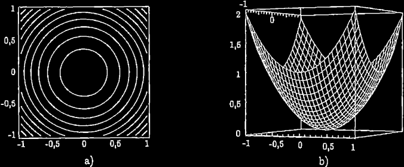
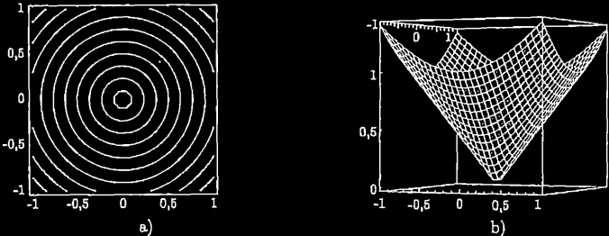
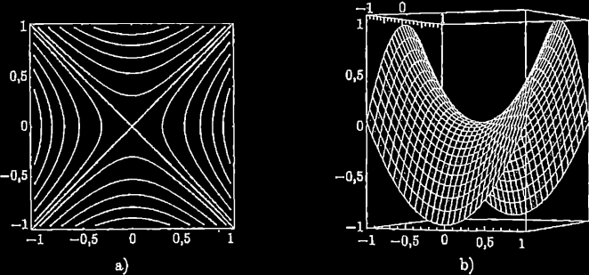

Funzioni reali a più variabili
Cominciamo a sviluppare il calcolo infinitesimale per le fuzioni reali di più variabili, ossia: f: ℝn → ℝ. Tutti i concetti nuovi che incontreremo possono essere illustrati in modo significativo già nel caso n = 2, che inoltre ha il pregio di consentirci di visualizzre il grafico di f. Perciò, e anche per semplificare le notazioni, parleremo sempre di funzioni di due variabili, f: ℝ2 ⟶ ℝ. Si tratta però solo di una scelta di linguaggio: tutto ciò che diremo varrà più in generale per funzioni di n variabili; negli esempi e negli esercizi tratteremo anche qualche caso di questo tipo.
Grafici e insiemi di livello
Ricordiamo che il grafico di una funzione reale di variabile reale, y = f(x), è l'insieme dei punto del piano ℝ2, di coordinate (x, f(x). Analogamente, il grafico di una funzione reale di più variabili reali
f: ℝn → ℝ
z = f(x)
dovce ora x indica un elemento di ℝn) è l'insieme dei punti di ℝn+1 di coordiante (x, f(x)). Per n = 2 questo grafico "vive" nello spazio tridimensionale, e può essere effettivamente visualizzato. Qualche esempio di grafico di funzioni di due variabili è mostrato negli esempi.
C'è un altro modo di rappresentare graficamente una fuznione z = f(x,y), ed è quello di tracciare le sue linee di livello. Si pensi alla superficie grafico di f come la superficie terrestre in una regione montuosa. Le linee di livello sono allora quelle che si tracciano nelel carte topografiche.
Un grafico a curve di livello è un disegno nel piano in cui si tracciano le linne lungo le quali f ha valore costante, per un insieme sufficientemente fitto di valori di f (nel caso delle carte topografiche, il valore di f è la quota sul livello del mare, e le linee di livello rappresentano ad es. le quote f = 100 m, f = 150 m, f = 200 m, ecc.)
É chiaro che un gafico a curve di livello (con linee sufficientemente fitte) contiene le istruzioni per costruire il grafico di f (sia pur in modo approssimato). Un altro esempio di utilizzo delle linee di livello, lo vediamo ogni giorni nelle previsioni del tempo: il grafico delle isobare, ossia delel linee di livello della funzione di due variabili "pressione atmosferica nel punto di coordinate (x,y,z), al livello del mare".
Matematicamente, quindi le linee di livello sono definite da un'equaizone del tipo
f(x,y) = costante
Si noti che se le linee di livello, f(x,y) = k sono tracciate per un insieme di valori k equispaziati (ad es. k = 0.1 k = 0.2, k = 0.3, ...), le linee di livello saranno più fitte là dove il grafico della funzione è più ripido. e più distanziate là dove il grafico della funzione è più pianeggiante.
Esempio 2.1. La funzione
f (x,y) = x2 + y2
è definita in tutto il piano, è sempre ≥ 0, ha linee di livello x2 + y2 = c. Ad es., per c = 1, 2, 3, ..., le linee di livello sono le circonferenze centrate nell'origine e raggio 1, √2, √3, ... Da queste linee di livelo leggiamo che: la funzione f ha simmetria radiale (ossia: la funzione ha los stesso valore nei punti che hanno la stessa distanza dall'origine) e, allontanandosi dall'origine, cresce sempre più velocemente (le linee di livello diventano più dense). Il grafico della funzione sarà quindi del tipo in figura.
Esempio 2.2. La funzione
è definita in tutto il piano, è sempre ≥ 0, ha linee di livello sqrt(x2 + y2) = c. Ad es., per c = 1,2,3,.., le linee di livello sono le circonferenze centrate nell'origine e raggio 1,2,3.. (fig.2a). Anche questa funzione dunque ha simmetria radiale; a differenza della precedente, tuttavia, allontanandosi dall'origine cresce a ritmo costante (le linee di livello sono equispaziate), cioè linearmente. Se facciamo una sezione verticale del grafico di f(x,y), intersecandolo col piano y = 0, otteniamo la curva z = √x2 = |x|, che ha un punto angoloso nell'origine. La funzione è dunque un cono
Esempio 2.3. La funzione
f (x,y) = x2 − y2
è definita in tutto il piano e assume valori sia positivi che negativi. Le sue linee di livello sono le curve x2 − y2 = c, che rappresentano: per c = 0 le 2 rette y = ±x; per gli altri valori di c, iperboli equilatere aventi le rette y = ±x coem asintoti, e precisamente: se c > 0, iperboli coi vertici sull'asse x, se c < 0 iperboli coi vertici sull'asse y. Se ne deduce che il grafico della funzione ("paraboloide iperbolico") ha la tipica forma a sella.
Esempio 2.4. La funzione
è definita solo nel cerchio x2 + y2 ≤ 1, ed è positiva. Le sue curve di livello sono le curve
Si tratta quindi di circonferenze di centro l'origine e raggio sqrt(1−c2), purché 0 ≤ c ≤ 1. Anche questa è dunque una funzione radiale, che si annulla sul bordo del cerchio su cui è definita e, come segnalato dalle linee di livello, è più ripidca al bordo del cerchio. Il grafico è la superficie di una semisfera. come si capisce, del resto, riscrivendo l'equzione \sqrt{1 - x^2 - y^2} nella forma x2 + y2 + z2 = 1, z ≥ 0. ■
Consideriamo ora una uznione di più di due variabili f: ℝn → ℝ con n > 2. In questo caso, purtroppo, il "grafico" di f non si può disegnare (perché "vive" in uno spazio con più di tre dimensioni). Questo è il motivo per cui spesso esemplificheremo le funzioni di più variabili nel caso n = 2. Si tenga comunque presente che, nelle applicazioni, le funzioni di mole variabili compaiono frequentemente, e non c'è una ragione particolare per studiare solo quelle di due variabili.
Una (parziale) visualizzazione di una funzione di tre variabili si ha mediante le superfici di livello, concetto analogo a quello di linee di livello, in una dimensione in più.
Esempio 2.5. Sia u(x,y,z): ℝ3 → ℝ il potenziale elettrostatico generato nello spazio da un certe sistema di cariche elettriche. (In condizioni di equilibrio elettrostatico, il potenziale non dipende dal tempo, perciò è una funzione delle sole tre variabili spaziali). Il luogo dei punti dello spazio in cui u(x,y,z) = costante è una supeficie, che si dice superficie equipotenziale. Ad es., nel caso del potenziale generato da una sola carica puntiforme posta nell'origine, si ha
dove k è una costante che dipende dalle unità di misura scelte; le superfici equipotenziali sono rappresentate da
\frac{k}{ \sqrt{x^2 + y^2 +z^2}} = costante
cioè
x2 + y2 + z2 = costante (positiva)
e sono quindi superfici sferiche centrate nell'origine. ■
Generalizzando l'ultimo esempio, diciamo che le superfici di livello di una funzione f(x,y,z) sono definite da un'equazione del tipo f(x,y,z) = costante.
Analogamente, per una fuznione f : ℝn → ℝ (con n qualunque) si chiamano insiemi di livello gli insiemi del tipo {x ∈ ℝn : f(x) = c}, al variare della costante c.
Esempio 2.5. Le superfici di livello di i>f(x,y,z) = x2 + y2 + z sono definite dall'equazione x2 + y2 + z = cost, che si può scrivere come z = c − x2 − y2. Queste superfici sono dunque paraboloidi, grafici della funzione g(x,y) = c − x2 − y2. ■
Esempio 2.6. Nell'esempio 2.5 le superfici di livello erano definite implicitamente dall'equazione x2 + y2 + z2 = c. ■
Esempio 2.7. Le superfici di livello di f(x,y,z)2 + z2 sono definite da (x + y)2 = c. Per c = 0, in particolare, la "superficie" è in realtà l'unione dei due piani z = ± (x + z). ■